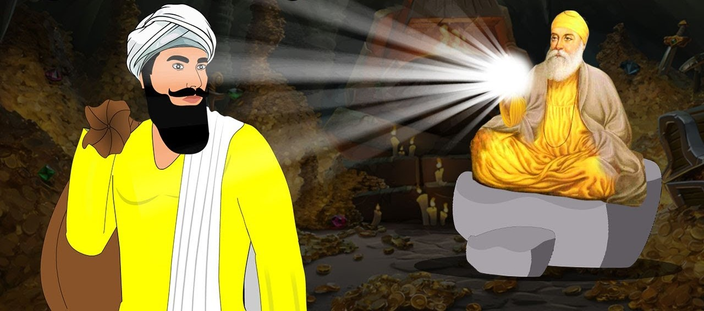

A Story of Redemption and Sikh Values

Bhoomi was a feared dacoit (bandit) who lived in the forests. He robbed the rich and lived by violence and fear. People trembled at the mention of his name.
One day, Guru Nanak Dev Ji and Bhai Mardana passed through the forest where Bhoomi lived. Bhoomi confronted them, expecting valuables. But Guru Nanak Ji calmly looked at him and said, “We have something more precious than gold – the truth.”
Bhoomi was confused. No one had ever spoken to him with such peace. He asked, “Why are you not afraid of me?” Guru Ji replied, “Because Waheguru is within you too, Bhoomi.”
Bhoomi was shocked. No one had seen him as more than a criminal. Guru Ji’s words touched his heart. He began to weep. “Is there hope for someone like me?” he asked.
Guru Nanak Ji answered, “Yes. Make a promise to walk the path of truth, and Waheguru will guide you.”
Bhoomi promised never to steal or hurt anyone again. He returned what he had taken and began serving others. The bandit became a servant of the people, helping travelers in the forest with food, shelter, and love.
“No one is beyond hope — the light of truth can transform even the hardest heart.”